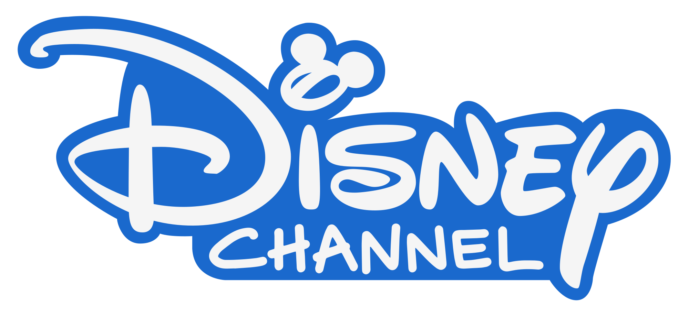

Copyright Law
A widespread law to protect and encourage authors...
Or a law to protect the companies benefits and its interests?

Original artist: Joseph Ferdinand Keppler (1838-1894) Restoration: Adam Cuerden, Joseph Ferdinand Keppler - The Pirate Publisher - Puck Magazine - Restoration by Adam Cuerden, CC BY 3.0
{kind=link}
1710, key year for the copyright
The origin of the copyright is in the Statute of Anne, an act enacted by the Parliament of Great Britain. It was the first law to provide public regulation of the copyright and not by private parties.
It gave legal protection to publishers during the prescribed copyright term of 14 years for books, with the possibility of renewal for a similar term. Theorically, when the work's copyright expired it would fall into the public domain.
The Statute of Anne had influence in succeeding laws around the world, as the Copyright Clause of the United States Constitution and the Copyright Act of 1790. It foment the development of copyright treaties until now.
British Government, Statute of anne, marked as public domain, for more details see Wikimedia Commons
{kind=link}
But, what is copyrightable?
And what not?
Don Hopkins, Back of the envelope with the "Copyleft (L)" sticker, mailed from Don Hopkins to Richard Stallman in 1984., CC BY-SA 3.0
"_sticker,_mailed_from_Don_Hopkins_to_Richard_Stallman_in_1984..jpg){kind=link}
The Statute of Anne began helding only books, but with the over the years the copyright acts were expanding its scope. Nowadays, practically everything you can imagine can be copyrightable... But not your imagination!
Just the expressions of works are copyrightable, not the facts nor ideas! Following this principle, you could imagine the composition of a song, but you don't want to write it nor publish it. If someone record a song like the one you imagine, you can't protest, because the copyright protects the expressions of the ideas and facts in tangible forms, nor the ideas or facts itself.
But, could be copyrighted any creative work?
Practically all the creative works expressed are copyrightable, but there is some general categories of works, with difference between countries.
- Literary and artistic works.
- Translations, adaptions, arrangements and alternations of literary and artistic works.
- Collection of literary and artistic works.
- Applied art, industrial designs and models.
- Computer software.
What is the relationship between copyright, trademark and patents?
The "intellectual property" (IP) term is used to refer to the rights that grant to creators the possibility to restrict the use of its works. The copyright is part of the IP, but it isn't its only tool, there is another like the trademark and the patents, among others. Both are related with the copyright, but they are not intrinsically necessary with each other.
Disney, 2015 Disney Channel logo, marked as public domain, more details on Wikimedia Commons
{kind=link}
Copyright and trademarks
EMI Music, EMI logo, marked as public domain, more details on Wikimedia Commons
{kind=link}
The EMI logo is a trademark, so it is protected to been used in specific cases, like in the case in which the trademark could be confused with another goods or services.
But, is copyrighted?
No, the EMI logo can't be copyrighted because it doesn't reach the threshold of originality, concept used in the copyright law to distinguish the original works from which it isn't original.
Mainly the images composed by basic geometry shapes and text aren't copyrightable because it doesn't reachs this threshold.
What about patents?
Patents protect the monopoly of the inventions of an inventor during a limited time. A patent not only give the exclusive right to make a specific invention, it also grants the exclusive right to make and have made, to use and have used, to offer for sale and have sold, and to import patentable inventions.
Remember! You don't own the copyright of a creative work until you express it in tangible form, like a drawing in a paper sheet.
Thomas A. (Thomas Alva), 1847-1931, inscriber. DSI; United States. Patent Office, Collection of United States patents granted to Thomas A. Edison, 1869-1884 (1869) (14570102659), marked as public domain, more details on Wikimedia Commons
_(14570102659).jpg){kind=link}
How a person receives copyright protection for their work?
If someone want to receive copyright protection for a creative work what it is only necessary is to express work in a tangible form: write it in a digital document, in a paper sheet, take a photograph, etc.
You can also register your work with a local copyright authority, although this isn't necessary in general to be granted by the copyright protection, there is some countries in which may be necessary.
What is the public domain?
It consists of creative works without copyright or that are not a copyrightable subject. When the copyright expires the creative work falls under the public domain.
The photograph below is under the public domain.

Unknown, 1910 Fabrica de tabaco Calixto Lopez y Companía Habana Cuba, marked as public domain, more details on Wikimedia Commons
{kind=link}
How to use works in public domain?
NASA, Canarias NASA3, marked as public domain, more details on Wikimedia Commons
{kind=link}
The necessity of identify and credit the author depends of the country. In the countries in where the moral rights exists after the copyrights expiration, may be necessary to make it.
There is communities that have adopted norms to use the works in public domain, like Creative Commons, creator of the Public Domain Guidelines.
Respect the authorship and credit it is honest and make possible a more respectful community with the licenses requirements and with work made by anothers.
How enters a work in the public domain?
- The copyright expires. This is the main reason why a work fall under the public domain, but it depends of the country in which was made the work and where the works is going to be used.
- The copyright holder failed to comply with formalities to acquire or maintain their copyright. Although there isn't formal requirements in most countries, there is cases in which the copyright holder is required to fill it in a local copyright authority. See the case of USA between 1978 and 1989.
- The work was never entitled to copyright protection. Certain categories of works fall outside the scope of the copyright, this is the case of the legislative, administrative and legal nature works. It is usually to find works created by government employees too.
- The creator dedicates the work to the public domain before copyright has expired. Yes, there is authors that dedicates their works to the public domain. This is one of the easiest way to make the works globally available.
If you are asking yourself what you can do with a work in public domain, you have to know that...
You can make whatever you want!
You can reuse, remix, adapt and share the work. And remember, the credit to the author is just necessary in some countries, but you have to value if it may be better than don't do it.
Copyright exemptions
The exemptions of the copyright are the uses in which someone can use copyrighted works without problems, always respecting the terms of use. For example, a write of a newspapers that writes a critic of an art exhibition in your city. The exemptions differ by country, but the most common ways are:
- Listing specific activities. For example, the use of copyrighted works in a virtual educational environment. This approach provide a clear definition, but anything that doesn't fit with this categories could infringe the law.
- Include flexible guidelines based on the three-factor test, which determines that the use is a special case and the reproduction doesn't conflict with the regular explotaition of the work and not prejudice unreasonably the interests of the author. This is the fair use, although in the United States is determined by the four-factor test ―purpose and character of the use, nature of the copyrighted work, the amount and the substiantiability of the portion taken, and the effect of the use upon the market (Stanford Copyright and Fair Use Center)―.
Conclusion
Copyright is not simple and is to learn all what it involves could be hard because the variety of laws and scopes of the different countries, in spite of the international treaties. However, it is necessary to know to make a world with a more open and free access to the knowledge, because the copyright is the base for the most of the creative works in the world.
Slide presentation made by Iván Hernández Cazorla (Ivanhercaz) with reveal.js (JavaScript framework developed by Hakim El Hattab).

Slide presentation available in GitHub